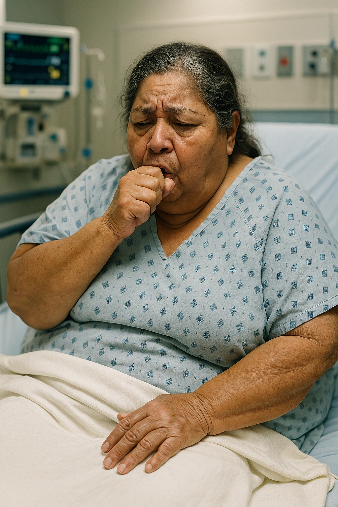

Patient Demographics
Age:
85 years old
Language:
Spanish-speaking (son provides history)
Medical Records:
Most records from another health system
Historian:
Son (due to language barrier)
History of Present Illness
No HPI information discovered yet
Medications
No medication information discovered yet
Physical Examination
No examination findings discovered yet
Laboratory Results
No laboratory results discovered yet
Imaging Studies
No imaging results discovered yet
Submit Diagnosis
Clinical Interview - History Taking
Ask the patient's son about the history of present illness and medications
Physical Examination
Perform physical examination by asking for specific findings
Laboratory & Imaging Studies
Order diagnostic tests by speaking with the resident
Clinical Performance Analysis
Your performance in this clinical simulation